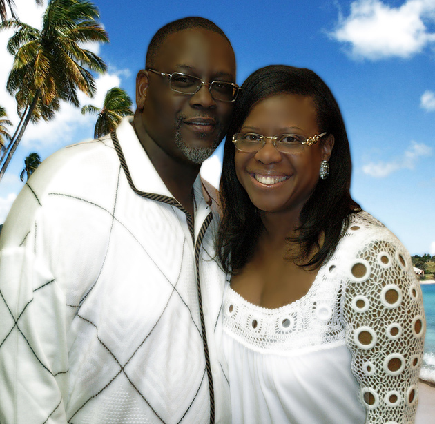

Kerry’s Place • Visual Journey
Choose language:
Select…
English (English)
Español (Spanish)
Français (French)
Italiano (Italian)
Deutsch (German)
Português (Portuguese)
Nederlands (Dutch)
Polski (Polish)
हिन्दी (Hindi)
한국어 (Korean)
日本語 (Japanese)
中文 (Chinese)
العربية (Arabic)
Kiswahili (Swahili)
Filipino (Filipino)
Türkçe (Turkish)
Peaceful Waters Tranquility
Find your calm in seconds.
Available in 15 translations.
Experience Peace Today
Shop on Zenfolio
Español
Français
Italiano
Deutsch
Português
Nederlands
Polski
हिन्दी
한국어
日本語
中文
العربية
Kiswahili
Filipino
Türkçe

Quick Language Links
English
English
Español
Spanish
Français
French
Italiano
Italian
Deutsch
German
Português
Portuguese
Nederlands
Dutch
Polski
Polish
हिन्दी
Hindi
한국어
Korean
日本語
Japanese
中文
Chinese
العربية
Arabic
Kiswahili
Swahili
Filipino
Filipino
Türkçe
Turkish